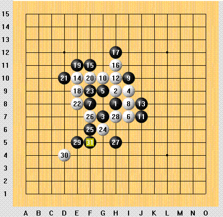
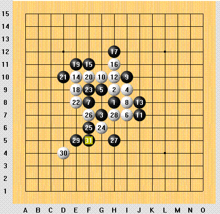
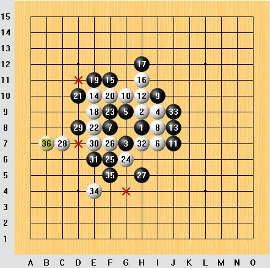

我的一对局
首页
五子棋交流
#1 我的一对局 作者：飞翔 发表时间：2006-3-5 21:00:41
28手考虑了好长时间才想到个抓四四：）
（南通在线对弈 有禁）

#2 Re:我的一对局 作者：有志青年 发表时间：2006-3-6 8:40:07
不错不错
#3 Re:我的一对局 作者：飞翔 发表时间：2006-3-6 9:48:52
他先冲四，我就抓不到了。。 

#4 Re:我的一对局 作者：飞翔 发表时间：2006-3-6 9:58:23
我觉得这个28手才是正确的。

#5 Re:我的一对局 作者：非黑既白 发表时间：2011-7-25 10:41:29
历史总是惊人的相似